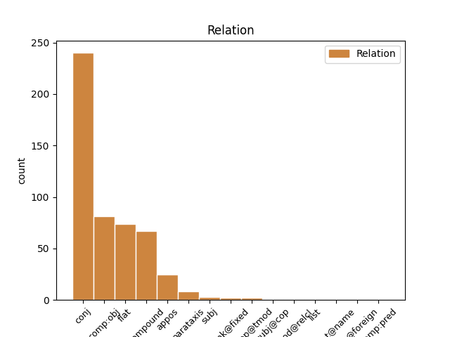
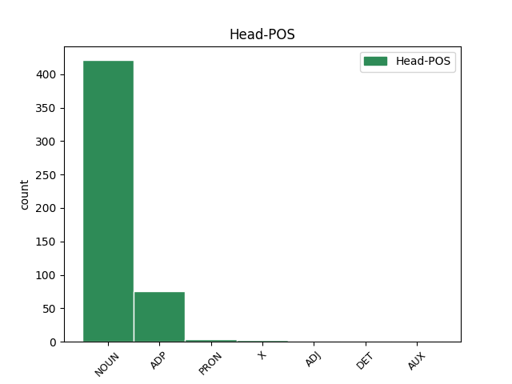
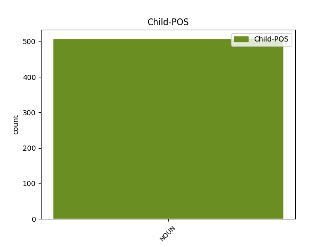

Distribution of features within this leaf



Agreement Rules sorted by frequency.
- When the dependent token is the conjunct(conj) of the head token, and the head token is NOUN and the dependent token is NOUN.
1 Níor _ _ _ _ 0 _ _ _
2 dhearcaigh _ _ _ _ 0 _ _ _
3 Gael _ _ _ _ 0 _ _ _
4 íogaireach _ _ _ _ 0 _ _ _
5 riamh _ _ _ _ 0 _ _ _
6 ar _ _ _ _ 0 _ _ _
7 shliabh sliabh NOUN Noun Form=Len|Gender=Masc|Number=Sing 0 _ _ _
8 ná _ _ _ _ 0 _ _ _
9 ar _ _ _ _ 0 _ _ _
10 chnoc cnoc NOUN Noun Form=Len|Gender=Masc|Number=Sing 7 conj _ _
11 gan _ _ _ _ 0 _ _ _
12 smaoineamh _ _ _ _ 0 _ _ _
13 siar _ _ _ _ 0 _ _ _
14 ar _ _ _ _ 0 _ _ _
15 an _ _ _ _ 0 _ _ _
16 allóid _ _ _ _ 0 _ _ _
17 . _ _ _ _ 0 _ _ _
1 Óir _ _ _ _ 0 _ _ _
2 tá _ _ _ _ 0 _ _ _
3 Ninì _ _ _ _ 0 _ _ _
4 ach _ _ _ _ 0 _ _ _
5 oiread _ _ _ _ 0 _ _ _
6 leis _ _ _ _ 0 _ _ _
7 an _ _ _ _ 0 _ _ _
8 lámhscríbhinn _ _ _ _ 0 _ _ _
9 imithe _ _ _ _ 0 _ _ _
10 ina _ _ _ _ 0 _ _ _
11 rian _ _ _ _ 0 _ _ _
12 ar _ _ _ _ 0 _ _ _
13 íochtar _ _ _ _ 0 _ _ _
14 mo _ _ _ _ 0 _ _ _
15 chroí _ _ _ _ 0 _ _ _
16 mar _ _ _ _ 0 _ _ _
17 a _ _ _ _ 0 _ _ _
18 bheadh _ _ _ _ 0 _ _ _
19 rud _ _ _ _ 0 _ _ _
20 éigin _ _ _ _ 0 _ _ _
21 íonghlan _ _ _ _ 0 _ _ _
22 dothuigthe _ _ _ _ 0 _ _ _
23 ann _ _ _ _ 0 _ _ _
24 , _ _ _ _ 0 _ _ _
25 rud _ _ _ _ 0 _ _ _
26 ceomhar _ _ _ _ 0 _ _ _
27 diamhair _ _ _ _ 0 _ _ _
28 mar _ _ _ _ 0 _ _ _
29 is _ _ _ _ 0 _ _ _
30 dual _ _ _ _ 0 _ _ _
31 do _ _ _ _ 0 _ _ _
32 na _ _ _ _ 0 _ _ _
33 brionglóidí _ _ _ _ 0 _ _ _
34 , _ _ _ _ 0 _ _ _
35 an _ _ _ _ 0 _ _ _
36 péire _ _ _ _ 0 _ _ _
37 acu _ _ _ _ 0 _ _ _
38 tar _ _ _ _ 0 _ _ _
39 éis _ _ _ _ 0 _ _ _
40 leá _ _ _ _ 0 _ _ _
41 ina _ _ _ _ 0 _ _ _
42 chéile _ _ _ _ 0 _ _ _
43 ina _ _ _ _ 0 _ _ _
44 n-aon _ _ _ _ 0 _ _ _
45 rian _ _ _ _ 0 _ _ _
46 amháin _ _ _ _ 0 _ _ _
47 , _ _ _ _ 0 _ _ _
48 faoi _ _ _ _ 0 _ _ _
49 mar _ _ _ _ 0 _ _ _
50 a _ _ _ _ 0 _ _ _
51 bheadh _ _ _ _ 0 _ _ _
52 Ninì _ _ _ _ 0 _ _ _
53 díscaoilte _ _ _ _ 0 _ _ _
54 agus _ _ _ _ 0 _ _ _
55 an _ _ _ _ 0 _ _ _
56 lámhscríbhinn _ _ _ _ 0 _ _ _
57 ina _ _ _ _ 0 _ _ _
58 lámha _ _ _ _ 0 _ _ _
59 aici _ _ _ _ 0 _ _ _
60 , _ _ _ _ 0 _ _ _
61 an _ _ _ _ 0 _ _ _
62 lámhscríbhinn _ _ _ _ 0 _ _ _
63 in _ _ _ _ 0 _ _ _
64 éindí _ _ _ _ 0 _ _ _
65 léi _ _ _ _ 0 _ _ _
66 , _ _ _ _ 0 _ _ _
67 ina _ _ _ _ 0 _ _ _
68 cuid _ _ _ _ 0 _ _ _
69 dhlúth _ _ _ _ 0 _ _ _
70 di _ _ _ _ 0 _ _ _
71 , _ _ _ _ 0 _ _ _
72 í _ _ _ _ 0 _ _ _
73 aontaithe _ _ _ _ 0 _ _ _
74 ar _ _ _ _ 0 _ _ _
75 fad _ _ _ _ 0 _ _ _
76 lena le ADP Poss Gender=Fem|Number=Sing|Person=3|Poss=Yes 0 _ _ _
77 pearsa pearsa NOUN Noun Gender=Fem|Number=Sing 76 comp:obj _ _
78 siúd _ _ _ _ 0 _ _ _
79 . _ _ _ _ 0 _ _ _
1 Acht _ _ _ _ 0 _ _ _
2 seo _ _ _ _ 0 _ _ _
3 - _ _ _ _ 0 _ _ _
4 ciallaíonn _ _ _ _ 0 _ _ _
5 ' _ _ _ _ 0 _ _ _
6 an _ _ _ _ 0 _ _ _
7 Príomh-Acht _ _ _ _ 0 _ _ _
8 ' _ _ _ _ 0 _ _ _
9 an _ _ _ _ 0 _ _ _
10 tAcht _ _ _ _ 0 _ _ _
11 Leasa _ _ _ _ 0 _ _ _
12 Shóisialaigh _ _ _ _ 0 _ _ _
13 ( _ _ _ _ 0 _ _ _
14 Comhdhlúthú _ _ _ _ 0 _ _ _
15 ) _ _ _ _ 0 _ _ _
16 , _ _ _ _ 0 _ _ _
17 1993 _ _ _ _ 0 _ _ _
18 ; _ _ _ _ 0 _ _ _
19 ciallaíonn _ _ _ _ 0 _ _ _
20 ' _ _ _ _ 0 _ _ _
21 Acht _ _ _ _ 0 _ _ _
22 1994 _ _ _ _ 0 _ _ _
23 ' _ _ _ _ 0 _ _ _
24 an _ _ _ _ 0 _ _ _
25 tAcht acht NOUN Noun Definite=Def|Gender=Masc|Number=Sing 0 _ _ _
26 Leasa leas NOUN Noun Case=Gen|Gender=Masc|Number=Sing 25 flat _ _
27 Shóisialaigh _ _ _ _ 0 _ _ _
28 , _ _ _ _ 0 _ _ _
29 1994 _ _ _ _ 0 _ _ _
30 . _ _ _ _ 0 _ _ _
1 Nuair _ _ _ _ 0 _ _ _
2 nár _ _ _ _ 0 _ _ _
3 éirigh _ _ _ _ 0 _ _ _
4 leo _ _ _ _ 0 _ _ _
5 aitheantas _ _ _ _ 0 _ _ _
6 nó _ _ _ _ 0 _ _ _
7 slí slí NOUN Noun Gender=Fem|Number=Sing 0 _ _ _
8 bheatha beatha NOUN Noun Form=Len|Gender=Fem|Number=Sing 7 compound _ _
9 a _ _ _ _ 0 _ _ _
10 bhaint _ _ _ _ 0 _ _ _
11 amach _ _ _ _ 0 _ _ _
12 in _ _ _ _ 0 _ _ _
13 Albain _ _ _ _ 0 _ _ _
14 thug _ _ _ _ 0 _ _ _
15 siad _ _ _ _ 0 _ _ _
16 a _ _ _ _ 0 _ _ _
17 n-aghaidh _ _ _ _ 0 _ _ _
18 ar _ _ _ _ 0 _ _ _
19 Londain _ _ _ _ 0 _ _ _
20 . _ _ _ _ 0 _ _ _
1 Ar _ _ _ _ 0 _ _ _
2 theacht _ _ _ _ 0 _ _ _
3 an _ _ _ _ 0 _ _ _
4 Taoisigh _ _ _ _ 0 _ _ _
5 chuir _ _ _ _ 0 _ _ _
6 an _ _ _ _ 0 _ _ _
7 Ceannasaí _ _ _ _ 0 _ _ _
8 Pól _ _ _ _ 0 _ _ _
9 Ó _ _ _ _ 0 _ _ _
10 Gallchóir _ _ _ _ 0 _ _ _
11 , _ _ _ _ 0 _ _ _
12 Príomhstiúrthóir stiúrthóir NOUN Noun Gender=Masc|Number=Sing 0 _ _ _
13 RTÉ _ _ _ _ 0 _ _ _
14 , _ _ _ _ 0 _ _ _
15 Bob bob NOUN Noun Gender=Masc|Number=Sing 12 appos _ _
16 Collins _ _ _ _ 0 _ _ _
17 agus _ _ _ _ 0 _ _ _
18 cathaoirleach _ _ _ _ 0 _ _ _
19 Chomhairle _ _ _ _ 0 _ _ _
20 Teilifís _ _ _ _ 0 _ _ _
21 na _ _ _ _ 0 _ _ _
22 Gaeilge _ _ _ _ 0 _ _ _
23 Seosamh _ _ _ _ 0 _ _ _
24 Mac _ _ _ _ 0 _ _ _
25 Donncha _ _ _ _ 0 _ _ _
26 fáilte _ _ _ _ 0 _ _ _
27 roimhe _ _ _ _ 0 _ _ _
28 . _ _ _ _ 0 _ _ _
1 Na _ _ _ _ 0 _ _ _
2 spéaclaí spéacla NOUN Noun Definite=Def|Gender=Masc|Number=Plur 0 _ _ _
3 - _ _ _ _ 0 _ _ _
4 sea _ _ _ _ 0 _ _ _
5 , _ _ _ _ 0 _ _ _
6 na _ _ _ _ 0 _ _ _
7 spéaclaí spéacla NOUN Noun Definite=Def|Gender=Masc|Number=Plur 2 parataxis _ SpaceAfter=No
8 . _ _ _ _ 0 _ _ _
1 Ní _ _ _ _ 0 _ _ _
2 raibh _ _ _ _ 0 _ _ _
3 i _ _ _ _ 0 _ _ _
4 bfhad _ _ _ _ 0 _ _ _
5 go _ _ _ _ 0 _ _ _
6 dtáinig _ _ _ _ 0 _ _ _
7 mé _ _ _ _ 0 _ _ _
8 a _ _ _ _ 0 _ _ _
9 fhad _ _ _ _ 0 _ _ _
10 le _ _ _ _ 0 _ _ _
11 tábhairne _ _ _ _ 0 _ _ _
12 ar _ _ _ _ 0 _ _ _
13 mo _ _ _ _ 0 _ _ _
14 dheis _ _ _ _ 0 _ _ _
15 ós _ _ _ _ 0 _ _ _
16 cionn _ _ _ _ 0 _ _ _
17 an _ _ _ _ 0 _ _ _
18 bhealaigh _ _ _ _ 0 _ _ _
19 The _ _ _ _ 0 _ _ _
20 Tight _ _ _ _ 0 _ _ _
21 Line _ _ _ _ 0 _ _ _
22 ar _ _ _ _ 0 _ _ _
23 chuala _ _ _ _ 0 _ _ _
24 mé _ _ _ _ 0 _ _ _
25 na _ _ _ _ 0 _ _ _
26 hoibrithe _ _ _ _ 0 _ _ _
27 as _ _ _ _ 0 _ _ _
28 Tír _ _ _ _ 0 _ _ _
29 Chonaill _ _ _ _ 0 _ _ _
30 ag _ _ _ _ 0 _ _ _
31 caint _ _ _ _ 0 _ _ _
32 fá faoi X CU Dialect=Ulster|Gender=Masc|Number=Sing|Person=3 0 _ _ _
33 dtaobh taobh NOUN Noun Form=Ecl|Gender=Masc|Number=Sing 32 comp:obj _ _
34 de _ _ _ _ 0 _ _ _
35 . _ _ _ _ 0 _ _ _
1 Bhuail _ _ _ _ 0 _ _ _
2 sí _ _ _ _ 0 _ _ _
3 léi _ _ _ _ 0 _ _ _
4 ina _ _ _ _ 0 _ _ _
5 dhiaidh _ _ _ _ 0 _ _ _
6 sin _ _ _ _ 0 _ _ _
7 , _ _ _ _ 0 _ _ _
8 í í PRON Pers Gender=Fem|Number=Sing|Person=3 0 _ _ _
9 ag _ _ _ _ 0 _ _ _
10 féachaint _ _ _ _ 0 _ _ _
11 anonn _ _ _ _ 0 _ _ _
12 ar _ _ _ _ 0 _ _ _
13 bhalla _ _ _ _ 0 _ _ _
14 leathan _ _ _ _ 0 _ _ _
15 lom _ _ _ _ 0 _ _ _
16 , _ _ _ _ 0 _ _ _
17 a _ _ _ _ 0 _ _ _
18 méar méar NOUN Noun Gender=Fem|Number=Sing 8 conj _ _
19 curtha _ _ _ _ 0 _ _ _
20 go _ _ _ _ 0 _ _ _
21 héadrom _ _ _ _ 0 _ _ _
22 lena _ _ _ _ 0 _ _ _
23 béal _ _ _ _ 0 _ _ _
24 , _ _ _ _ 0 _ _ _
25 agus _ _ _ _ 0 _ _ _
26 na _ _ _ _ 0 _ _ _
27 híomhánna _ _ _ _ 0 _ _ _
28 á _ _ _ _ 0 _ _ _
29 nginiuint _ _ _ _ 0 _ _ _
30 ina _ _ _ _ 0 _ _ _
31 hintinn _ _ _ _ 0 _ _ _
32 istigh _ _ _ _ 0 _ _ _
33 : _ _ _ _ 0 _ _ _
34 na _ _ _ _ 0 _ _ _
35 Tiotáin _ _ _ _ 0 _ _ _
36 á _ _ _ _ 0 _ _ _
37 mbrú _ _ _ _ 0 _ _ _
38 ag _ _ _ _ 0 _ _ _
39 maidhm _ _ _ _ 0 _ _ _
40 charraigeacha _ _ _ _ 0 _ _ _
41 , _ _ _ _ 0 _ _ _
42 díoltas _ _ _ _ 0 _ _ _
43 na _ _ _ _ 0 _ _ _
44 ndéithe _ _ _ _ 0 _ _ _
45 á _ _ _ _ 0 _ _ _
46 agairt _ _ _ _ 0 _ _ _
47 orthu _ _ _ _ 0 _ _ _
48 anuas _ _ _ _ 0 _ _ _
49 . _ _ _ _ 0 _ _ _
1 Tá _ _ _ _ 0 _ _ _
2 stádas _ _ _ _ 0 _ _ _
3 faoi _ _ _ _ 0 _ _ _
4 leith _ _ _ _ 0 _ _ _
5 ag _ _ _ _ 0 _ _ _
6 an _ _ _ _ 0 _ _ _
7 UDA _ _ _ _ 0 _ _ _
8 sa _ _ _ _ 0 _ _ _
9 tSeanchill _ _ _ _ 0 _ _ _
10 cionn ceann NOUN Noun Case=Dat|Gender=Fem|Number=Sing 0 _ _ _
11 is _ _ _ _ 0 _ _ _
12 stair stair NOUN Noun Case=NomAcc|Gender=Fem|Number=Sing 10 comp:obj _ _
13 an _ _ _ _ 0 _ _ _
14 eagrais _ _ _ _ 0 _ _ _
15 agus _ _ _ _ 0 _ _ _
16 cionn _ _ _ _ 0 _ _ _
17 is _ _ _ _ 0 _ _ _
18 gur _ _ _ _ 0 _ _ _
19 ansin _ _ _ _ 0 _ _ _
20 is _ _ _ _ 0 _ _ _
21 mó _ _ _ _ 0 _ _ _
22 a _ _ _ _ 0 _ _ _
23 bunaíodh _ _ _ _ 0 _ _ _
24 is _ _ _ _ 0 _ _ _
25 a _ _ _ _ 0 _ _ _
26 buanaíodh _ _ _ _ 0 _ _ _
27 é _ _ _ _ 0 _ _ _
28 . _ _ _ _ 0 _ _ _
1 ' _ _ _ _ 0 _ _ _
2 Sé is AUX Cop Gender=Masc|Number=Sing|Person=3|VerbForm=Cop 0 _ _ _
3 an _ _ _ _ 0 _ _ _
4 t-iontas iontas NOUN Noun Case=NomAcc|Definite=Def|Gender=Masc|Number=Sing 2 comp:pred _ _
5 é _ _ _ _ 0 _ _ _
6 go _ _ _ _ 0 _ _ _
7 bhfuil _ _ _ _ 0 _ _ _
8 ag _ _ _ _ 0 _ _ _
9 éirí _ _ _ _ 0 _ _ _
10 chomh _ _ _ _ 0 _ _ _
11 maith _ _ _ _ 0 _ _ _
12 sin _ _ _ _ 0 _ _ _
13 le _ _ _ _ 0 _ _ _
14 múineadh _ _ _ _ 0 _ _ _
15 na _ _ _ _ 0 _ _ _
16 teanga _ _ _ _ 0 _ _ _
17 sna _ _ _ _ 0 _ _ _
18 scoileanna _ _ _ _ 0 _ _ _
19 agus _ _ _ _ 0 _ _ _
20 a _ _ _ _ 0 _ _ _
21 bhfuil _ _ _ _ 0 _ _ _
22 de _ _ _ _ 0 _ _ _
23 loitiméireacht _ _ _ _ 0 _ _ _
24 á _ _ _ _ 0 _ _ _
25 dhéanamh _ _ _ _ 0 _ _ _
26 ar _ _ _ _ 0 _ _ _
27 thoradh _ _ _ _ 0 _ _ _
28 shaothar _ _ _ _ 0 _ _ _
29 na _ _ _ _ 0 _ _ _
30 scol _ _ _ _ 0 _ _ _
31 trí _ _ _ _ 0 _ _ _
32 aineolas _ _ _ _ 0 _ _ _
33 nó _ _ _ _ 0 _ _ _
34 faillí _ _ _ _ 0 _ _ _
35 oiread _ _ _ _ 0 _ _ _
36 sin _ _ _ _ 0 _ _ _
37 daoine _ _ _ _ 0 _ _ _
38 agus _ _ _ _ 0 _ _ _
39 dreamanna _ _ _ _ 0 _ _ _
40 sa _ _ _ _ 0 _ _ _
41 tír _ _ _ _ 0 _ _ _
42 . _ _ _ _ 0 _ _ _
1 Tá _ _ _ _ 0 _ _ _
2 cáil _ _ _ _ 0 _ _ _
3 ar _ _ _ _ 0 _ _ _
4 an _ _ _ _ 0 _ _ _
5 leabhar _ _ _ _ 0 _ _ _
6 leis _ _ _ _ 0 _ _ _
7 an _ _ _ _ 0 _ _ _
8 Phoncánach _ _ _ _ 0 _ _ _
9 , _ _ _ _ 0 _ _ _
10 Jahn _ _ _ _ 0 _ _ _
11 Sacks _ _ _ _ 0 _ _ _
12 , _ _ _ _ 0 _ _ _
13 ar _ _ _ _ 0 _ _ _
14 The _ _ _ _ 0 _ _ _
15 Donegal _ _ _ _ 0 _ _ _
16 Mafia _ _ _ _ 0 _ _ _
17 i _ _ _ _ 0 _ _ _
18 bParlaimint _ _ _ _ 0 _ _ _
19 na _ _ _ _ 0 _ _ _
20 hEorpa _ _ _ _ 0 _ _ _
21 , _ _ _ _ 0 _ _ _
22 go _ _ _ _ 0 _ _ _
23 dtí _ _ _ _ 0 _ _ _
24 an _ _ _ _ 0 _ _ _
25 lá _ _ _ _ 0 _ _ _
26 atá _ _ _ _ 0 _ _ _
27 inniu _ _ _ _ 0 _ _ _
28 ann _ _ _ _ 0 _ _ _
29 , _ _ _ _ 0 _ _ _
30 go _ _ _ _ 0 _ _ _
31 háirithe _ _ _ _ 0 _ _ _
32 i _ _ _ _ 0 _ _ _
33 measc _ _ _ _ 0 _ _ _
34 lucht _ _ _ _ 0 _ _ _
35 mion-náisiún _ _ _ _ 0 _ _ _
36 , _ _ _ _ 0 _ _ _
37 lucht _ _ _ _ 0 _ _ _
38 mionteangacha _ _ _ _ 0 _ _ _
39 agus _ _ _ _ 0 _ _ _
40 cultúir _ _ _ _ 0 _ _ _
41 ó _ _ _ _ 0 _ _ _
42 Winnie _ _ _ _ 0 _ _ _
43 Ewing _ _ _ _ 0 _ _ _
44 na _ _ _ _ 0 _ _ _
45 hAlban _ _ _ _ 0 _ _ _
46 go _ _ _ _ 0 _ _ _
47 dtí _ _ _ _ 0 _ _ _
48 an _ _ _ _ 0 _ _ _
49 Ministir _ _ _ _ 0 _ _ _
50 Protastúnach Protastúnach ADJ Adj Case=NomAcc|Gender=Masc|Number=Sing 0 _ _ _
51 / _ _ _ _ 0 _ _ _
52 Liútarach Liútarach NOUN Noun Case=NomAcc|Gender=Masc|Number=Sing 50 conj _ _
53 de _ _ _ _ 0 _ _ _
54 chuid _ _ _ _ 0 _ _ _
55 na _ _ _ _ 0 _ _ _
56 Danmhairge _ _ _ _ 0 _ _ _
57 , _ _ _ _ 0 _ _ _
58 bean _ _ _ _ 0 _ _ _
59 a _ _ _ _ 0 _ _ _
60 bhí _ _ _ _ 0 _ _ _
61 mar _ _ _ _ 0 _ _ _
62 Leas-Uachtarán _ _ _ _ 0 _ _ _
63 ar _ _ _ _ 0 _ _ _
64 Ghrúpa _ _ _ _ 0 _ _ _
65 nach _ _ _ _ 0 _ _ _
66 raibh _ _ _ _ 0 _ _ _
67 de _ _ _ _ 0 _ _ _
68 theideal _ _ _ _ 0 _ _ _
69 acu _ _ _ _ 0 _ _ _
70 ach _ _ _ _ 0 _ _ _
71 an _ _ _ _ 0 _ _ _
72 ' _ _ _ _ 0 _ _ _
73 Technical _ _ _ _ 0 _ _ _
74 Coordination _ _ _ _ 0 _ _ _
75 Group _ _ _ _ 0 _ _ _
76 ' _ _ _ _ 0 _ _ _
77 . _ _ _ _ 0 _ _ _
1 (4) _ _ _ _ 0 _ _ _
2 Maidir _ _ _ _ 0 _ _ _
3 le _ _ _ _ 0 _ _ _
4 gach _ _ _ _ 0 _ _ _
5 ceadúnas _ _ _ _ 0 _ _ _
6 , _ _ _ _ 0 _ _ _
7 díolúine _ _ _ _ 0 _ _ _
8 , _ _ _ _ 0 _ _ _
9 ceart _ _ _ _ 0 _ _ _
10 nó _ _ _ _ 0 _ _ _
11 pribhléid _ _ _ _ 0 _ _ _
12 a _ _ _ _ 0 _ _ _
13 dheonófar _ _ _ _ 0 _ _ _
14 don _ _ _ _ 0 _ _ _
15 Chuideachta _ _ _ _ 0 _ _ _
16 nó _ _ _ _ 0 _ _ _
17 a _ _ _ _ 0 _ _ _
18 bheidh _ _ _ _ 0 _ _ _
19 ar _ _ _ _ 0 _ _ _
20 teachtadh _ _ _ _ 0 _ _ _
21 aici _ _ _ _ 0 _ _ _
22 agus _ _ _ _ 0 _ _ _
23 a _ _ _ _ 0 _ _ _
24 bheidh _ _ _ _ 0 _ _ _
25 i _ _ _ _ 0 _ _ _
26 bhfeidhm _ _ _ _ 0 _ _ _
27 díreach _ _ _ _ 0 _ _ _
28 roimh _ _ _ _ 0 _ _ _
29 lá _ _ _ _ 0 _ _ _
30 an _ _ _ _ 0 _ _ _
31 aistrithe _ _ _ _ 0 _ _ _
32 i _ _ _ _ 0 _ _ _
33 ndáil _ _ _ _ 0 _ _ _
34 le _ _ _ _ 0 _ _ _
35 fochuideachta _ _ _ _ 0 _ _ _
36 , _ _ _ _ 0 _ _ _
37 beidh _ _ _ _ 0 _ _ _
38 sé _ _ _ _ 0 _ _ _
39 nó _ _ _ _ 0 _ _ _
40 sí _ _ _ _ 0 _ _ _
41 , _ _ _ _ 0 _ _ _
42 ar _ _ _ _ 0 _ _ _
43 an _ _ _ _ 0 _ _ _
44 lá _ _ _ _ 0 _ _ _
45 sin _ _ _ _ 0 _ _ _
46 agus _ _ _ _ 0 _ _ _
47 dá _ _ _ _ 0 _ _ _
48 éis _ _ _ _ 0 _ _ _
49 , _ _ _ _ 0 _ _ _
50 infheidhmithe _ _ _ _ 0 _ _ _
51 , _ _ _ _ 0 _ _ _
52 le _ _ _ _ 0 _ _ _
53 linn _ _ _ _ 0 _ _ _
54 dó _ _ _ _ 0 _ _ _
55 nó _ _ _ _ 0 _ _ _
56 di _ _ _ _ 0 _ _ _
57 leanúint _ _ _ _ 0 _ _ _
58 i _ _ _ _ 0 _ _ _
59 bhfeidhm _ _ _ _ 0 _ _ _
60 , _ _ _ _ 0 _ _ _
61 ag _ _ _ _ 0 _ _ _
62 an _ _ _ _ 0 _ _ _
63 bhfochuideachta _ _ _ _ 0 _ _ _
64 a a DET Det Gender=Masc|Number=Sing|Person=3|Poss=Yes 0 _ _ _
65 mhéid méid NOUN Noun Case=NomAcc|Form=Len|Gender=Masc|Number=Sing 64 unk@fixed _ _
66 a _ _ _ _ 0 _ _ _
67 bhaineann _ _ _ _ 0 _ _ _
68 sé _ _ _ _ 0 _ _ _
69 nó _ _ _ _ 0 _ _ _
70 sí _ _ _ _ 0 _ _ _
71 le _ _ _ _ 0 _ _ _
72 feidhm _ _ _ _ 0 _ _ _
73 a _ _ _ _ 0 _ _ _
74 thugtar _ _ _ _ 0 _ _ _
75 don _ _ _ _ 0 _ _ _
76 fhochuideachta _ _ _ _ 0 _ _ _
77 de _ _ _ _ 0 _ _ _
78 bhua _ _ _ _ 0 _ _ _
79 an _ _ _ _ 0 _ _ _
80 Achta _ _ _ _ 0 _ _ _
81 seo _ _ _ _ 0 _ _ _
82 nó _ _ _ _ 0 _ _ _
83 a _ _ _ _ 0 _ _ _
84 bheidh _ _ _ _ 0 _ _ _
85 teagmhasach _ _ _ _ 0 _ _ _
86 nó _ _ _ _ 0 _ _ _
87 bainteach _ _ _ _ 0 _ _ _
88 leis _ _ _ _ 0 _ _ _
89 an _ _ _ _ 0 _ _ _
90 bhfeidhm _ _ _ _ 0 _ _ _
91 sin _ _ _ _ 0 _ _ _
92 . _ _ _ _ 0 _ _ _
1 ' _ _ _ _ 0 _ _ _
2 Go _ _ _ _ 0 _ _ _
3 cnáimh _ _ _ _ 0 _ _ _
4 i _ _ _ _ 0 _ _ _
5 mbodach _ _ _ _ 0 _ _ _
6 an _ _ _ _ 0 _ _ _
7 chóta cóta NOUN Noun Case=Gen|Definite=Def|Gender=Masc|Number=Sing 0 _ _ _
8 lachtna lachna NOUN Noun Case=Gen|Gender=Masc|Number=Sing 7 unk@fixed _ SpaceAfter=No
9 , _ _ _ _ 0 _ _ _
10 ' _ _ _ _ 0 _ _ _
11 a _ _ _ _ 0 _ _ _
12 deirimse _ _ _ _ 0 _ _ _
13 . _ _ _ _ 0 _ _ _
1 I _ _ _ _ 0 _ _ _
2 dtaca _ _ _ _ 0 _ _ _
3 le _ _ _ _ 0 _ _ _
4 Boird _ _ _ _ 0 _ _ _
5 Sláinte _ _ _ _ 0 _ _ _
6 de _ _ _ _ 0 _ _ _
7 , _ _ _ _ 0 _ _ _
8 déanann _ _ _ _ 0 _ _ _
9 an _ _ _ _ 0 _ _ _
10 tOrdú _ _ _ _ 0 _ _ _
11 Rialtais _ _ _ _ 0 _ _ _
12 an _ _ _ _ 0 _ _ _
13 méid _ _ _ _ 0 _ _ _
14 seo _ _ _ _ 0 _ _ _
15 a _ _ _ _ 0 _ _ _
16 leanas _ _ _ _ 0 _ _ _
17 a _ _ _ _ 0 _ _ _
18 eisiamh _ _ _ _ 0 _ _ _
19 ó _ _ _ _ 0 _ _ _
20 réim _ _ _ _ 0 _ _ _
21 an _ _ _ _ 0 _ _ _
22 Ombudsman _ _ _ _ 0 _ _ _
23 : _ _ _ _ 0 _ _ _
24 a) _ _ _ _ 0 _ _ _
25 daoine _ _ _ _ 0 _ _ _
26 a _ _ _ _ 0 _ _ _
27 bhíonn _ _ _ _ 0 _ _ _
28 ag _ _ _ _ 0 _ _ _
29 gníomhú _ _ _ _ 0 _ _ _
30 thar _ _ _ _ 0 _ _ _
31 ceann _ _ _ _ 0 _ _ _
32 bord _ _ _ _ 0 _ _ _
33 sláinte _ _ _ _ 0 _ _ _
34 agus _ _ _ _ 0 _ _ _
35 ( _ _ _ _ 0 _ _ _
36 i _ _ _ _ 0 _ _ _
37 dtuairim _ _ _ _ 0 _ _ _
38 an _ _ _ _ 0 _ _ _
39 Ombudsman _ _ _ _ 0 _ _ _
40 ) _ _ _ _ 0 _ _ _
41 , _ _ _ _ 0 _ _ _
42 á _ _ _ _ 0 _ _ _
43 dhéanamh _ _ _ _ 0 _ _ _
44 sin _ _ _ _ 0 _ _ _
45 le _ _ _ _ 0 _ _ _
46 linn _ _ _ _ 0 _ _ _
47 breithiúnas _ _ _ _ 0 _ _ _
48 cliniciúil _ _ _ _ 0 _ _ _
49 a _ _ _ _ 0 _ _ _
50 fheidhmiú _ _ _ _ 0 _ _ _
51 i _ _ _ _ 0 _ _ _
52 ndáil _ _ _ _ 0 _ _ _
53 le _ _ _ _ 0 _ _ _
54 fáthmheas _ _ _ _ 0 _ _ _
55 easláine _ _ _ _ 0 _ _ _
56 nó _ _ _ _ 0 _ _ _
57 le _ _ _ _ 0 _ _ _
58 cúram _ _ _ _ 0 _ _ _
59 nó _ _ _ _ 0 _ _ _
60 cóireáil _ _ _ _ 0 _ _ _
61 othar _ _ _ _ 0 _ _ _
62 , _ _ _ _ 0 _ _ _
63 cibé _ _ _ _ 0 _ _ _
64 acu _ _ _ _ 0 _ _ _
65 is _ _ _ _ 0 _ _ _
66 é é PRON Pers Gender=Masc|Number=Sing|Person=3 0 _ _ _
67 an _ _ _ _ 0 _ _ _
68 duine duine NOUN Noun Definite=Def|Gender=Masc|Number=Sing 66 subj@cop _ _
69 a _ _ _ _ 0 _ _ _
70 ghlacann _ _ _ _ 0 _ _ _
71 an _ _ _ _ 0 _ _ _
72 gníomh _ _ _ _ 0 _ _ _
73 nó _ _ _ _ 0 _ _ _
74 aon _ _ _ _ 0 _ _ _
75 duine _ _ _ _ 0 _ _ _
76 eile _ _ _ _ 0 _ _ _
77 a _ _ _ _ 0 _ _ _
78 dheánann _ _ _ _ 0 _ _ _
79 an _ _ _ _ 0 _ _ _
80 breithiúnas _ _ _ _ 0 _ _ _
81 sin _ _ _ _ 0 _ _ _
82 , _ _ _ _ 0 _ _ _
83 agus _ _ _ _ 0 _ _ _
84 lena _ _ _ _ 0 _ _ _
85 linn _ _ _ _ 0 _ _ _
86 sin _ _ _ _ 0 _ _ _
87 amháin _ _ _ _ 0 _ _ _
88 , _ _ _ _ 0 _ _ _
89 nó _ _ _ _ 0 _ _ _
90 (b) _ _ _ _ 0 _ _ _
91 boird _ _ _ _ 0 _ _ _
92 sláinte _ _ _ _ 0 _ _ _
93 le _ _ _ _ 0 _ _ _
94 linn _ _ _ _ 0 _ _ _
95 dóibh _ _ _ _ 0 _ _ _
96 gníomhú _ _ _ _ 0 _ _ _
97 de _ _ _ _ 0 _ _ _
98 réir _ _ _ _ 0 _ _ _
99 comhairle _ _ _ _ 0 _ _ _
100 ó _ _ _ _ 0 _ _ _
101 dhaoine _ _ _ _ 0 _ _ _
102 atá _ _ _ _ 0 _ _ _
103 ag _ _ _ _ 0 _ _ _
104 gníomhú _ _ _ _ 0 _ _ _
105 mar _ _ _ _ 0 _ _ _
106 atá _ _ _ _ 0 _ _ _
107 réamhráite _ _ _ _ 0 _ _ _
108 , _ _ _ _ 0 _ _ _
109 ar _ _ _ _ 0 _ _ _
110 gníomhartha _ _ _ _ 0 _ _ _
111 de _ _ _ _ 0 _ _ _
112 chuid _ _ _ _ 0 _ _ _
113 bord _ _ _ _ 0 _ _ _
114 sláinte _ _ _ _ 0 _ _ _
115 iad _ _ _ _ 0 _ _ _
116 a _ _ _ _ 0 _ _ _
117 glacadh _ _ _ _ 0 _ _ _
118 , _ _ _ _ 0 _ _ _
119 i _ _ _ _ 0 _ _ _
120 dtuairim _ _ _ _ 0 _ _ _
121 an _ _ _ _ 0 _ _ _
122 Ombudsman _ _ _ _ 0 _ _ _
123 , _ _ _ _ 0 _ _ _
124 de _ _ _ _ 0 _ _ _
125 réir _ _ _ _ 0 _ _ _
126 na _ _ _ _ 0 _ _ _
127 comhairle _ _ _ _ 0 _ _ _
128 sin _ _ _ _ 0 _ _ _
129 amháin _ _ _ _ 0 _ _ _
130 . _ _ _ _ 0 _ _ _
1 I _ _ _ _ 0 _ _ _
2 dtaca _ _ _ _ 0 _ _ _
3 le _ _ _ _ 0 _ _ _
4 Boird _ _ _ _ 0 _ _ _
5 Sláinte _ _ _ _ 0 _ _ _
6 de _ _ _ _ 0 _ _ _
7 , _ _ _ _ 0 _ _ _
8 déanann _ _ _ _ 0 _ _ _
9 an _ _ _ _ 0 _ _ _
10 tOrdú _ _ _ _ 0 _ _ _
11 Rialtais _ _ _ _ 0 _ _ _
12 an _ _ _ _ 0 _ _ _
13 méid _ _ _ _ 0 _ _ _
14 seo _ _ _ _ 0 _ _ _
15 a _ _ _ _ 0 _ _ _
16 leanas _ _ _ _ 0 _ _ _
17 a _ _ _ _ 0 _ _ _
18 eisiamh _ _ _ _ 0 _ _ _
19 ó _ _ _ _ 0 _ _ _
20 réim _ _ _ _ 0 _ _ _
21 an _ _ _ _ 0 _ _ _
22 Ombudsman _ _ _ _ 0 _ _ _
23 : _ _ _ _ 0 _ _ _
24 a) _ _ _ _ 0 _ _ _
25 daoine _ _ _ _ 0 _ _ _
26 a _ _ _ _ 0 _ _ _
27 bhíonn _ _ _ _ 0 _ _ _
28 ag _ _ _ _ 0 _ _ _
29 gníomhú _ _ _ _ 0 _ _ _
30 thar _ _ _ _ 0 _ _ _
31 ceann _ _ _ _ 0 _ _ _
32 bord _ _ _ _ 0 _ _ _
33 sláinte _ _ _ _ 0 _ _ _
34 agus _ _ _ _ 0 _ _ _
35 ( _ _ _ _ 0 _ _ _
36 i _ _ _ _ 0 _ _ _
37 dtuairim _ _ _ _ 0 _ _ _
38 an _ _ _ _ 0 _ _ _
39 Ombudsman _ _ _ _ 0 _ _ _
40 ) _ _ _ _ 0 _ _ _
41 , _ _ _ _ 0 _ _ _
42 á _ _ _ _ 0 _ _ _
43 dhéanamh _ _ _ _ 0 _ _ _
44 sin _ _ _ _ 0 _ _ _
45 le _ _ _ _ 0 _ _ _
46 linn _ _ _ _ 0 _ _ _
47 breithiúnas _ _ _ _ 0 _ _ _
48 cliniciúil _ _ _ _ 0 _ _ _
49 a _ _ _ _ 0 _ _ _
50 fheidhmiú _ _ _ _ 0 _ _ _
51 i _ _ _ _ 0 _ _ _
52 ndáil _ _ _ _ 0 _ _ _
53 le _ _ _ _ 0 _ _ _
54 fáthmheas _ _ _ _ 0 _ _ _
55 easláine _ _ _ _ 0 _ _ _
56 nó _ _ _ _ 0 _ _ _
57 le _ _ _ _ 0 _ _ _
58 cúram _ _ _ _ 0 _ _ _
59 nó _ _ _ _ 0 _ _ _
60 cóireáil _ _ _ _ 0 _ _ _
61 othar _ _ _ _ 0 _ _ _
62 , _ _ _ _ 0 _ _ _
63 cibé _ _ _ _ 0 _ _ _
64 acu _ _ _ _ 0 _ _ _
65 is _ _ _ _ 0 _ _ _
66 é _ _ _ _ 0 _ _ _
67 an _ _ _ _ 0 _ _ _
68 duine _ _ _ _ 0 _ _ _
69 a _ _ _ _ 0 _ _ _
70 ghlacann _ _ _ _ 0 _ _ _
71 an _ _ _ _ 0 _ _ _
72 gníomh _ _ _ _ 0 _ _ _
73 nó _ _ _ _ 0 _ _ _
74 aon _ _ _ _ 0 _ _ _
75 duine _ _ _ _ 0 _ _ _
76 eile _ _ _ _ 0 _ _ _
77 a _ _ _ _ 0 _ _ _
78 dheánann _ _ _ _ 0 _ _ _
79 an _ _ _ _ 0 _ _ _
80 breithiúnas _ _ _ _ 0 _ _ _
81 sin _ _ _ _ 0 _ _ _
82 , _ _ _ _ 0 _ _ _
83 agus _ _ _ _ 0 _ _ _
84 lena le ADP Poss Gender=Masc|Number=Sing|Person=3|Poss=Yes 0 _ _ _
85 linn _ _ _ _ 0 _ _ _
86 sin _ _ _ _ 0 _ _ _
87 amháin _ _ _ _ 0 _ _ _
88 , _ _ _ _ 0 _ _ _
89 nó _ _ _ _ 0 _ _ _
90 (b) _ _ _ _ 0 _ _ _
91 boird bord NOUN Noun Gender=Masc|Number=Plur 84 conj _ _
92 sláinte _ _ _ _ 0 _ _ _
93 le _ _ _ _ 0 _ _ _
94 linn _ _ _ _ 0 _ _ _
95 dóibh _ _ _ _ 0 _ _ _
96 gníomhú _ _ _ _ 0 _ _ _
97 de _ _ _ _ 0 _ _ _
98 réir _ _ _ _ 0 _ _ _
99 comhairle _ _ _ _ 0 _ _ _
100 ó _ _ _ _ 0 _ _ _
101 dhaoine _ _ _ _ 0 _ _ _
102 atá _ _ _ _ 0 _ _ _
103 ag _ _ _ _ 0 _ _ _
104 gníomhú _ _ _ _ 0 _ _ _
105 mar _ _ _ _ 0 _ _ _
106 atá _ _ _ _ 0 _ _ _
107 réamhráite _ _ _ _ 0 _ _ _
108 , _ _ _ _ 0 _ _ _
109 ar _ _ _ _ 0 _ _ _
110 gníomhartha _ _ _ _ 0 _ _ _
111 de _ _ _ _ 0 _ _ _
112 chuid _ _ _ _ 0 _ _ _
113 bord _ _ _ _ 0 _ _ _
114 sláinte _ _ _ _ 0 _ _ _
115 iad _ _ _ _ 0 _ _ _
116 a _ _ _ _ 0 _ _ _
117 glacadh _ _ _ _ 0 _ _ _
118 , _ _ _ _ 0 _ _ _
119 i _ _ _ _ 0 _ _ _
120 dtuairim _ _ _ _ 0 _ _ _
121 an _ _ _ _ 0 _ _ _
122 Ombudsman _ _ _ _ 0 _ _ _
123 , _ _ _ _ 0 _ _ _
124 de _ _ _ _ 0 _ _ _
125 réir _ _ _ _ 0 _ _ _
126 na _ _ _ _ 0 _ _ _
127 comhairle _ _ _ _ 0 _ _ _
128 sin _ _ _ _ 0 _ _ _
129 amháin _ _ _ _ 0 _ _ _
130 . _ _ _ _ 0 _ _ _
1 ' _ _ _ _ 0 _ _ _
2 Caladh _ _ _ _ 0 _ _ _
3 mór _ _ _ _ 0 _ _ _
4 tráchtála _ _ _ _ 0 _ _ _
5 atá _ _ _ _ 0 _ _ _
6 ann _ _ _ _ 0 _ _ _
7 chomh _ _ _ _ 0 _ _ _
8 maith _ _ _ _ 0 _ _ _
9 - _ _ _ _ 0 _ _ _
10 seolann _ _ _ _ 0 _ _ _
11 longa _ _ _ _ 0 _ _ _
12 lán _ _ _ _ 0 _ _ _
13 fíona _ _ _ _ 0 _ _ _
14 an _ _ _ _ 0 _ _ _
15 Languedoc _ _ _ _ 0 _ _ _
16 agus _ _ _ _ 0 _ _ _
17 earraí earra NOUN Noun Gender=Masc|Number=Plur 0 _ _ _
18 petroleum petroleum NOUN Noun Gender=Masc|Number=Sing 17 flat@foreign _ _
19 Frontignan _ _ _ _ 0 _ _ _
20 amach _ _ _ _ 0 _ _ _
21 as _ _ _ _ 0 _ _ _
22 ar _ _ _ _ 0 _ _ _
23 fud _ _ _ _ 0 _ _ _
24 an _ _ _ _ 0 _ _ _
25 domhain _ _ _ _ 0 _ _ _
26 . _ _ _ _ 0 _ _ _
1 Stair _ _ _ _ 0 _ _ _
2 : _ _ _ _ 0 _ _ _
3 Staidéir staidéar NOUN Noun Gender=Masc|Number=Plur 0 _ _ _
4 áitiúla _ _ _ _ 0 _ _ _
5 - _ _ _ _ 0 _ _ _
6 Féastaí féasta NOUN Noun Gender=Masc|Number=Plur 3 list _ _
7 agus _ _ _ _ 0 _ _ _
8 féilte _ _ _ _ 0 _ _ _
9 fadó _ _ _ _ 0 _ _ _
10 OSPS _ _ _ _ 0 _ _ _
11 : _ _ _ _ 0 _ _ _
12 Mé _ _ _ _ 0 _ _ _
13 féin _ _ _ _ 0 _ _ _
14 - _ _ _ _ 0 _ _ _
15 Braistintí _ _ _ _ 0 _ _ _
16 agus _ _ _ _ 0 _ _ _
17 mothúcháin _ _ _ _ 0 _ _ _
18 - _ _ _ _ 0 _ _ _
19 damhsa _ _ _ _ 0 _ _ _
20 le _ _ _ _ 0 _ _ _
21 tionlacan _ _ _ _ 0 _ _ _
22 ceoil _ _ _ _ 0 _ _ _
23 agus _ _ _ _ 0 _ _ _
24 íogaireacht _ _ _ _ 0 _ _ _
25 a _ _ _ _ 0 _ _ _
26 léiriú _ _ _ _ 0 _ _ _
27 d' _ _ _ _ 0 _ _ _
28 athruithe _ _ _ _ 0 _ _ _
29 rithime _ _ _ _ 0 _ _ _
30 agus _ _ _ _ 0 _ _ _
31 do _ _ _ _ 0 _ _ _
32 mhíriú _ _ _ _ 0 _ _ _
33 stopadh _ _ _ _ 0 _ _ _
34 de _ _ _ _ 0 _ _ _
35 réir _ _ _ _ 0 _ _ _
36 mar _ _ _ _ 0 _ _ _
37 is _ _ _ _ 0 _ _ _
38 cuí _ _ _ _ 0 _ _ _
39 , _ _ _ _ 0 _ _ _
40 an _ _ _ _ 0 _ _ _
41 chéad _ _ _ _ 0 _ _ _
42 fhrása _ _ _ _ 0 _ _ _
43 eile _ _ _ _ 0 _ _ _
44 a _ _ _ _ 0 _ _ _
45 réamhghabháil _ _ _ _ 0 _ _ _
46 - _ _ _ _ 0 _ _ _
47 stáidiúlacht _ _ _ _ 0 _ _ _
48 , _ _ _ _ 0 _ _ _
49 cothromaíocht _ _ _ _ 0 _ _ _
50 , _ _ _ _ 0 _ _ _
51 rialú _ _ _ _ 0 _ _ _
52 agus _ _ _ _ 0 _ _ _
53 comhordú _ _ _ _ 0 _ _ _
54 sa _ _ _ _ 0 _ _ _
55 bhreis _ _ _ _ 0 _ _ _
56 a _ _ _ _ 0 _ _ _
57 léiriú _ _ _ _ 0 _ _ _
58 le _ _ _ _ 0 _ _ _
59 linn _ _ _ _ 0 _ _ _
60 gluaiseachta _ _ _ _ 0 _ _ _
61 agus _ _ _ _ 0 _ _ _
62 stoptha _ _ _ _ 0 _ _ _
63 . _ _ _ _ 0 _ _ _
1 Níor _ _ _ _ 0 _ _ _
2 dhearcaigh dearcach ADJ Adj Case=Gen|Gender=Masc|Number=Sing 0 _ _ _
3 Gael gael NOUN Noun Gender=Masc|Number=Sing 2 subj _ _
4 íogaireach _ _ _ _ 0 _ _ _
5 riamh _ _ _ _ 0 _ _ _
6 ar _ _ _ _ 0 _ _ _
7 shliabh _ _ _ _ 0 _ _ _
8 ná _ _ _ _ 0 _ _ _
9 ar _ _ _ _ 0 _ _ _
10 chnoc _ _ _ _ 0 _ _ _
11 gan _ _ _ _ 0 _ _ _
12 smaoineamh _ _ _ _ 0 _ _ _
13 siar _ _ _ _ 0 _ _ _
14 ar _ _ _ _ 0 _ _ _
15 an _ _ _ _ 0 _ _ _
16 allóid _ _ _ _ 0 _ _ _
17 . _ _ _ _ 0 _ _ _
Disagree Examples:
1 Limistéar _ _ _ _ 0 _ _ _
2 na _ _ _ _ 0 _ _ _
3 Meánmhara _ _ _ _ 0 _ _ _
4 is _ _ _ _ 0 _ _ _
5 áit áit NOUN Noun Case=NomAcc|Gender=Fem|Number=Sing 0 _ _ _
6 dúcháis dúchas NOUN Noun Case=Gen|Gender=Masc|Number=Sing 5 compound _ _
7 don _ _ _ _ 0 _ _ _
8 Rós _ _ _ _ 0 _ _ _
9 Mhuire _ _ _ _ 0 _ _ _
10 . _ _ _ _ 0 _ _ _
1 Riasc _ _ _ _ 0 _ _ _
2 beag _ _ _ _ 0 _ _ _
3 ag _ _ _ _ 0 _ _ _
4 ceann _ _ _ _ 0 _ _ _
5 an _ _ _ _ 0 _ _ _
6 bhóithrín _ _ _ _ 0 _ _ _
7 a _ _ _ _ 0 _ _ _
8 mbínn _ _ _ _ 0 _ _ _
9 ag _ _ _ _ 0 _ _ _
10 déanamh _ _ _ _ 0 _ _ _
11 gairdeasa _ _ _ _ 0 _ _ _
12 faoi _ _ _ _ 0 _ _ _
13 , _ _ _ _ 0 _ _ _
14 faoina _ _ _ _ 0 _ _ _
15 fhásra _ _ _ _ 0 _ _ _
16 bláthanna _ _ _ _ 0 _ _ _
17 , _ _ _ _ 0 _ _ _
18 faoina _ _ _ _ 0 _ _ _
19 fhásra _ _ _ _ 0 _ _ _
20 luachra luachair NOUN Noun Case=Gen|Gender=Fem|Number=Sing 0 _ _ _
21 is _ _ _ _ 0 _ _ _
22 féir féar NOUN Noun Case=Gen|Gender=Masc|Number=Sing 20 conj _ SpaceAfter=No
23 , _ _ _ _ 0 _ _ _
24 faoina _ _ _ _ 0 _ _ _
25 sheileastram _ _ _ _ 0 _ _ _
26 , _ _ _ _ 0 _ _ _
27 bhí _ _ _ _ 0 _ _ _
28 sé _ _ _ _ 0 _ _ _
29 líonta _ _ _ _ 0 _ _ _
30 isteach _ _ _ _ 0 _ _ _
31 . _ _ _ _ 0 _ _ _
1 ' _ _ _ _ 0 _ _ _
2 Dadaí dadaí NOUN Noun Case=NomAcc|Gender=Masc|Number=Sing 0 _ _ _
3 ' _ _ _ _ 0 _ _ _
4 agus _ _ _ _ 0 _ _ _
5 ' _ _ _ _ 0 _ _ _
6 Mamaí mamaí NOUN Noun Case=NomAcc|Gender=Fem|Number=Sing 2 conj _ SpaceAfter=No
7 ' _ _ _ _ 0 _ _ _
8 seachas _ _ _ _ 0 _ _ _
9 ' _ _ _ _ 0 _ _ _
10 mo _ _ _ _ 0 _ _ _
11 dheaide _ _ _ _ 0 _ _ _
12 ' _ _ _ _ 0 _ _ _
13 agus _ _ _ _ 0 _ _ _
14 ' _ _ _ _ 0 _ _ _
15 mo _ _ _ _ 0 _ _ _
16 mhaime _ _ _ _ 0 _ _ _
17 ' _ _ _ _ 0 _ _ _
18 a _ _ _ _ 0 _ _ _
19 thugaidís _ _ _ _ 0 _ _ _
20 ar _ _ _ _ 0 _ _ _
21 a _ _ _ _ 0 _ _ _
22 n-athair _ _ _ _ 0 _ _ _
23 agus _ _ _ _ 0 _ _ _
24 a _ _ _ _ 0 _ _ _
25 máthair _ _ _ _ 0 _ _ _
26 . _ _ _ _ 0 _ _ _
1 ' _ _ _ _ 0 _ _ _
2 Dadaí _ _ _ _ 0 _ _ _
3 ' _ _ _ _ 0 _ _ _
4 agus _ _ _ _ 0 _ _ _
5 ' _ _ _ _ 0 _ _ _
6 Mamaí _ _ _ _ 0 _ _ _
7 ' _ _ _ _ 0 _ _ _
8 seachas _ _ _ _ 0 _ _ _
9 ' _ _ _ _ 0 _ _ _
10 mo _ _ _ _ 0 _ _ _
11 dheaide _ _ _ _ 0 _ _ _
12 ' _ _ _ _ 0 _ _ _
13 agus _ _ _ _ 0 _ _ _
14 ' _ _ _ _ 0 _ _ _
15 mo _ _ _ _ 0 _ _ _
16 mhaime _ _ _ _ 0 _ _ _
17 ' _ _ _ _ 0 _ _ _
18 a _ _ _ _ 0 _ _ _
19 thugaidís _ _ _ _ 0 _ _ _
20 ar _ _ _ _ 0 _ _ _
21 a _ _ _ _ 0 _ _ _
22 n-athair athair NOUN Noun Case=NomAcc|Form=Ecl|Gender=Masc|Number=Sing 0 _ _ _
23 agus _ _ _ _ 0 _ _ _
24 a _ _ _ _ 0 _ _ _
25 máthair máthair NOUN Noun Case=NomAcc|Form=Ecl|Gender=Fem|Number=Sing 22 conj _ SpaceAfter=No
26 . _ _ _ _ 0 _ _ _
1 Má _ _ _ _ 0 _ _ _
2 bhíonn _ _ _ _ 0 _ _ _
3 súil _ _ _ _ 0 _ _ _
4 ag _ _ _ _ 0 _ _ _
5 an _ _ _ _ 0 _ _ _
6 saol _ _ _ _ 0 _ _ _
7 ar _ _ _ _ 0 _ _ _
8 eachtraí _ _ _ _ 0 _ _ _
9 , _ _ _ _ 0 _ _ _
10 nó _ _ _ _ 0 _ _ _
11 má _ _ _ _ 0 _ _ _
12 bhíonn _ _ _ _ 0 _ _ _
13 an _ _ _ _ 0 _ _ _
14 chosúlacht _ _ _ _ 0 _ _ _
15 féin _ _ _ _ 0 _ _ _
16 ar _ _ _ _ 0 _ _ _
17 an _ _ _ _ 0 _ _ _
18 scéal _ _ _ _ 0 _ _ _
19 gur _ _ _ _ 0 _ _ _
20 amhlaidh _ _ _ _ 0 _ _ _
21 atá _ _ _ _ 0 _ _ _
22 , _ _ _ _ 0 _ _ _
23 bíonn _ _ _ _ 0 _ _ _
24 sé _ _ _ _ 0 _ _ _
25 ina i ADP Poss Gender=Masc|Number=Sing|Person=3|Poss=Yes 0 _ _ _
26 chosaint cosaint NOUN Noun Case=NomAcc|Form=Len|Gender=Fem|Number=Sing 25 comp:obj _ _
27 ag _ _ _ _ 0 _ _ _
28 daoine _ _ _ _ 0 _ _ _
29 - _ _ _ _ 0 _ _ _
30 más _ _ _ _ 0 _ _ _
31 lag _ _ _ _ 0 _ _ _
32 lúbach _ _ _ _ 0 _ _ _
33 an _ _ _ _ 0 _ _ _
34 chosaint _ _ _ _ 0 _ _ _
35 in _ _ _ _ 0 _ _ _
36 amannaí _ _ _ _ 0 _ _ _
37 é _ _ _ _ 0 _ _ _
38 . _ _ _ _ 0 _ _ _